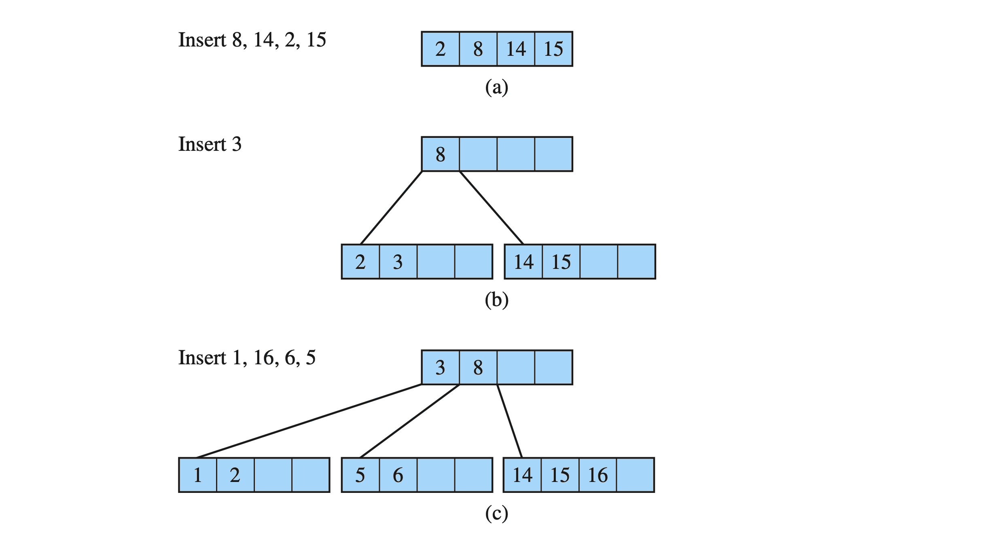
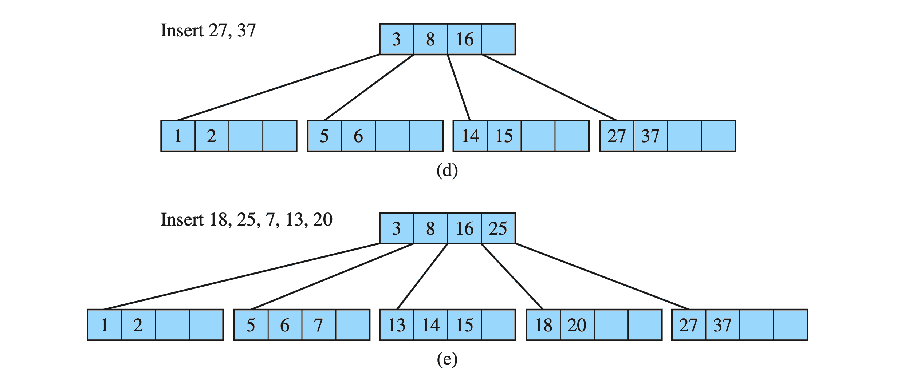
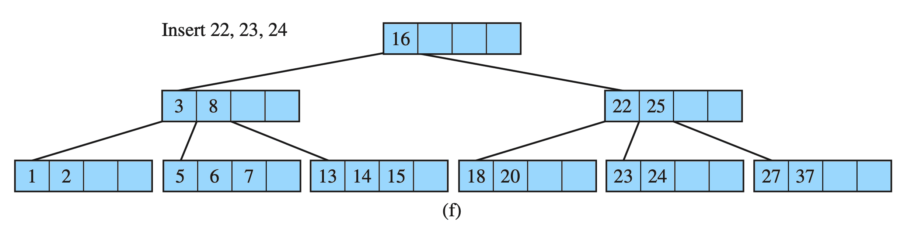
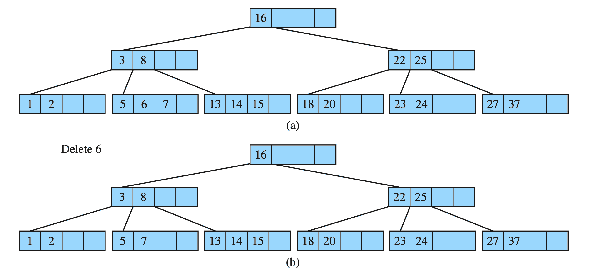
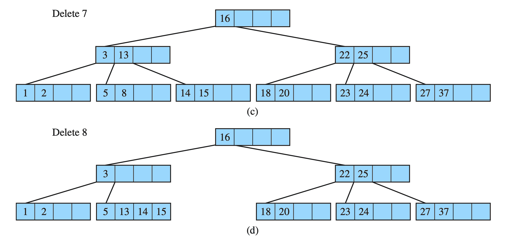
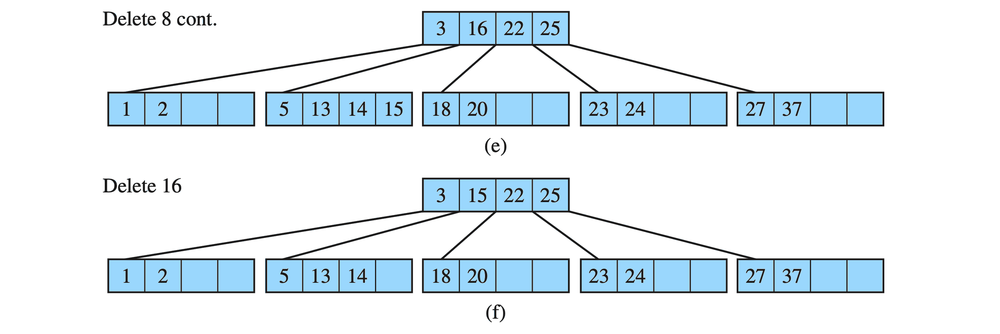
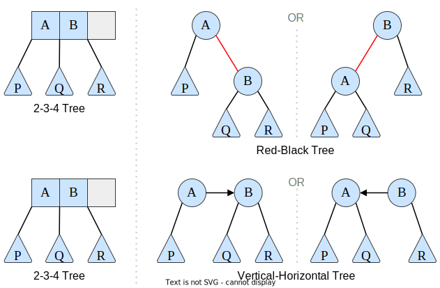
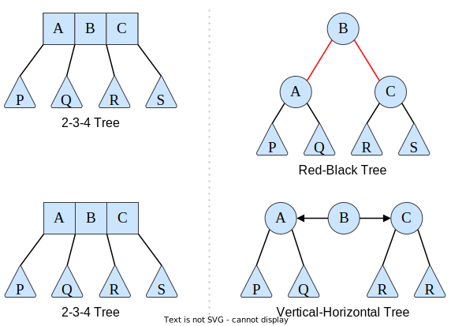
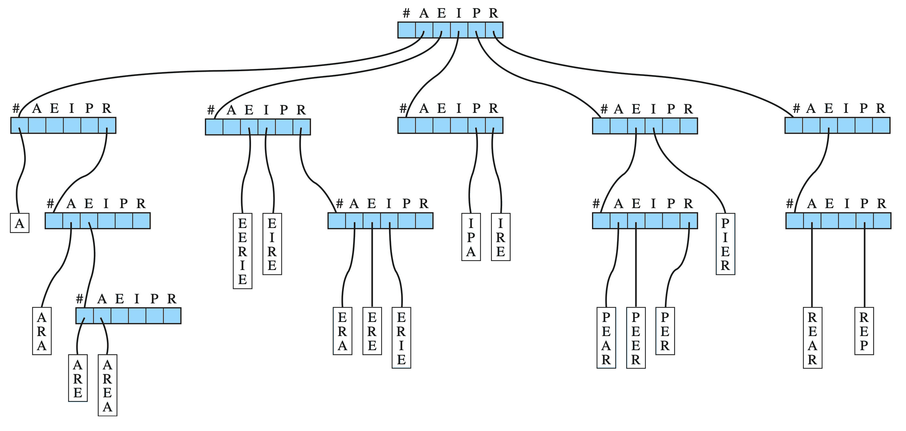
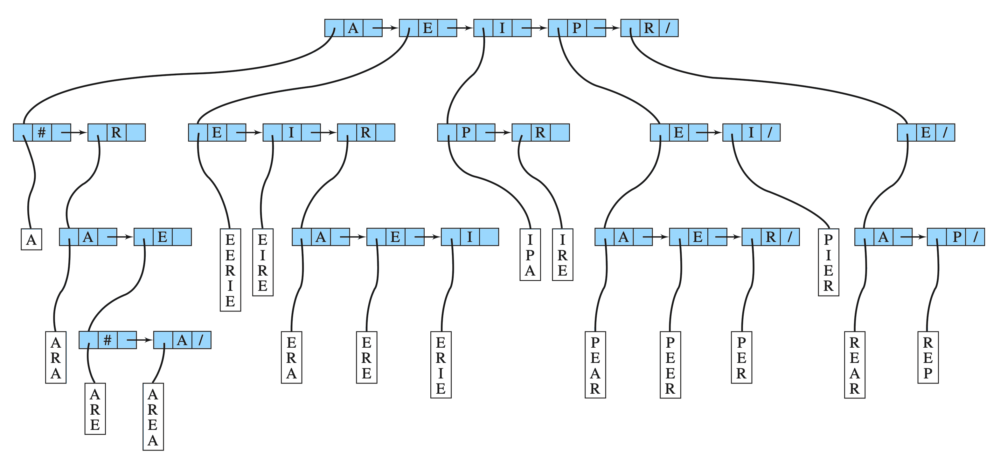

Multiway Trees (m-Trees)
📚 Drozdek (Ch. 7)
Definition
A multiway tree of order \(m\) is a generalized tree in which each node may have up to \(m\) children (each of which may also be trees).
A multiway search tree of order \(m\) is a multiway tree in which:
- Each node has \(m\) children and \(m-1\) keys.
- The keys in each node are in ascending order
- The keys in the first \(i\) children are less than the \(i\)th key.
- The keys in the last \(m-i\) children are greater than the \(i\)th key.
B-Trees
- When storing data on secondary storage (such as a spinning-platter hard disk), the basic unit of storage is a block.
- Blocks tend to be rather large (in comparison to individual data values in memory).
- It is inefficient to access the hard disk, so a data structure that makes efficient use of the disk block is desirable.
B-Trees
- In a B-Tree, the node size is designed the same as a disk block.
- B-Trees (of order \(m\)) follow these rules:
- The root has at least two subtrees unless it is a leaf.
- Each non-root and non-leaf node holds \(k-1\) keys and \(k\) pointers to subtrees where \(k\) is between
ceil(m/2)and \(m\). - Each leaf node holds \(k-1\) keys where \(k\) is between
ceil(m/2)and \(m\). - All leaves are on the same level.
B-Trees
Example of a B-tree of order 5:
B-Tree
Drozdek Figure 7.7
Searching a B-Tree
BTNode* BTree::search(keyType k, BTNode* subroot=root) const {
int i = 0;
BTNode* ans = nullptr;
if(subroot){
while(i < subroot->key_count && subroot->keys[i] < k){
++i; // Do nothing, except increment i
}
if(i >= subroot->key_count || subroot->keys[i] > k){
ans = search(k, subroot->pointers[i]);
}
else{
ans = subroot;
}
}
return ans;
}Drozdek Figure 7.7
Insert into a B-Tree
- Inserts occur at the leaf level (search down to where the value should appear, and insert in that leaf).
- If the leaf is not full, the insert is finished.
- If the leaf is full, it must be split into two leaves, with half of the values from the full leaf in each.
- The middle value is chosen to move “up” to the parent node
- If the parent node is also full, it too must split (and so on).
- See Drozdek pg. 315-319
Insert key into a B-Tree : Example
B-Tree
Drozdek Figure 7.8
Insert key into a B-Tree : Example
B-Tree
Drozdek Figure 7.8
Insert key into a B-Tree : Example
B-Tree
Drozdek Figure 7.8
Delete from a B-Tree
- Care must be taken to always keep nodes at least half full.
- Deleting from a leaf:
- If the leaf is left half-full (or more), done.
- If the leaf is less than half-full:
- If there is a left or right sibling that is over half-full, the keys are redistributed by moving the separator key from the parent down, then picking a new separator as the middle value from both nodes.
- If all siblings are only exactly half-full, then the leaf is merged with a sibling, and the separating value from the parent is moved down to the new node (deleting it from the parent).
- This may cause a chain-reaction if the parent underflows.
- A special case exists if the parent is the root with only one key. The nodes are merged into the parent’s location and the two leaf nodes are discarded. (height decreases one level).
Delete from a B-Tree
- Deleting from a non-leaf:
Could cause problems with the organization of the tree, so it is avoided by reducing to deleting from a leaf- Find the leaf with the immediate predecessor (or successor) of the value you are deleting.
- Copy the value of the predecessor to the target’s location.
- Delete the predecessor from the leaf.
- See Drozdek pg. 319-321
Delete key from a B-Tree : Example
B-Tree
Drozdek Figure 7.9
Delete key from a B-Tree : Example
B-Tree
Drozdek Figure 7.9
Delete key from a B-Tree : Example
B-Tree
Drozdek Figure 7.9
B*, B+, R Trees
B* trees work like B-tree, except that nodes must remain 2/3 full at all times. (Average utilization becomes 81%.)
B+ trees try to optimize traversals with respect to secondary storage by only storing data at the leaves, and using internal nodes as an “index”.
- Essentially they are just B-trees (indexes) with a linked-list “added” at the leaf-level.
- In-order traversal can be performed at the leaf level only (it is a linked list!)
R-trees represent spatial (2-D or 3-D) data.
V/H Trees (or Red-Black Trees)
If you restrict a B tree so that the order is small, it can be used for efficient search trees in memory.
- Order 4 trees are often used (called 2-3-4 trees).
Due to the overhead of the unused storage in each node, you might want to eliminate it and use a strict binary tree.
We can do both.
Red-black trees (or vertical-horizontal trees) do this by maintaining two kinds of links (designated by a flag).
One kind links to children, the other links to other node elements within the same logical B-tree node.
See Drozdek 337-352.
Comparision of 2-3-4 tree vs. Red-Black tree vs. Horizontal-Vertical tree
2-3-4 vs. Red-Black Trees
Drozdek Figure 7.23
Comparision of 2-3-4 tree vs. Red-Black tree vs. Horizontal-Vertical tree
Complete 2-3-4 vs. Red-Black Trees
Drozdek Figure 7.23
Tries
Pronounced “try”, but comes from the word “retrieval”. 🤷♂️
Each node contains only a part of the key being searched.
Often, the keys are “words” (sequences of letters); each node contains a single letter.
Nodes are either leaf nodes (containing a word or the suffix or a word), or non-leaf nodes (with an array of pointers to sub-tries).
Very fast for things like spell checkers, etc.
Trie height depends on the length of common prefixes.
See Drozdek 364-372
Example of a Trie
This one has words containing the letters A, E, I, R, P.
A Trie
Notice that there can be a lot of unused pointers in the nodes…
Drozdek Figure 7.38
Example of a Trie
Same as the previous trie, but implemented as a h-v tree to reduce the unused storage locations.

Drozdek Figure 7.40

Multiway Trees (m-Trees)

CS 50x2 Accelerated Programming Series